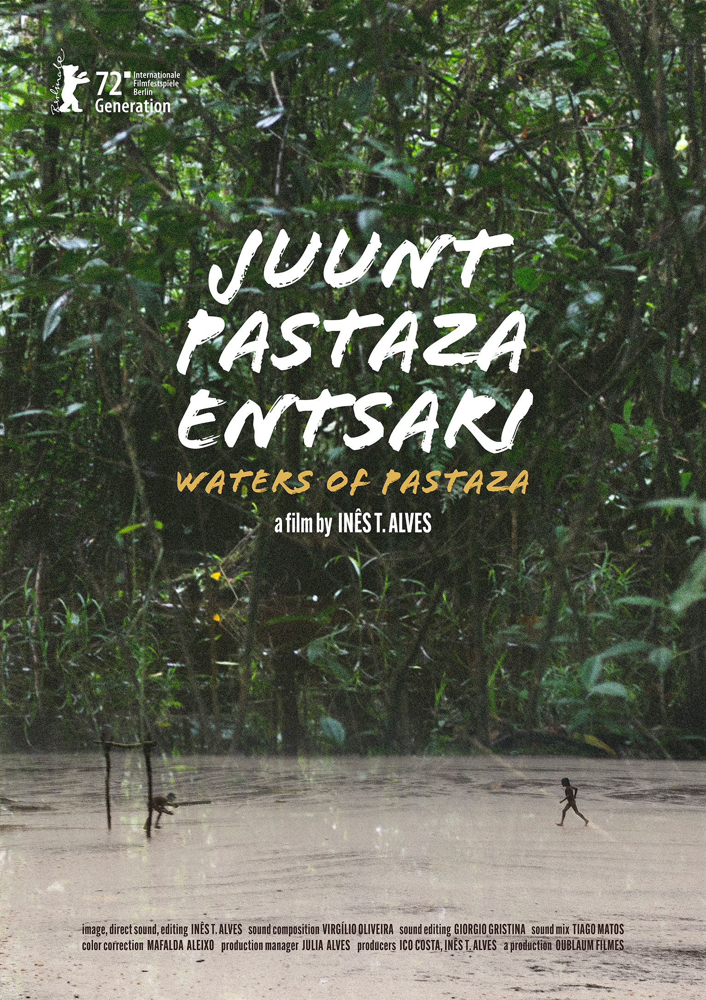
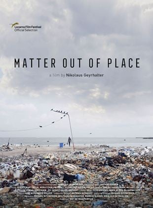

Cinemateca Capitólio visitar

O Acidente
Brasil, 2022, 95 minutos, DCP Sessão comentada com a participação do diretor e do professor, músico e ensaísta Ricardo Timm de Souza no dia 09/09.
Horários: 15:00h Sala de Cinema
Direção: Bruno Carboni
Classificação Indicativa: 14 anos
Joana é uma ciclista que sofre um estranho acidente. Mesmo que tenha saído ilesa, ela decide esconder o episódio da mulher com quem está prestes a começar uma família. Mas, um vídeo do acidente viraliza e muda as coisas.
Mais informações
Mirante
Brasil, 2019, 80 minutos, DCP Na sessão do dia 29/08, será realizada uma intervenção musical de Vagner Cunha.
Horários: 16:40h Sala de Cinema
Direção: Rodrigo John
Classificação Indicativa: 12 anos
Um jovem desenvolve o costume de admirar as pessoas que passam pelas ruas do centro de Porto Alegre através da janela de sua casa. No entanto, transformações na política brasileira fazem com que antigas feridas sejam reabertas. De repente, ele encontra dificuldades em separar a vida no apartamento e os acontecimentos externos.
Mais informações- 
Águas do Pastaza
Portugal, 2022, 62 minutos, DCP.
Horários: 18:00h Sala de Cinema
Direção: Inês T. Alves
O longa se passa na Floresta Amazônica, na fronteira entre o Equador e o Peru, e acompanha uma comunidade isolada chamada Achuar. Dela, faz parte um grupo de crianças que vivem em harmonia com a flora e fauna.
Mais informações - 
Lixo Fora do Lugar
Áustria, 2022, 105 minutos DCP
Horários: 19:15h Sala de Cinema
Direção: Nikolaus Geyrhalter
Lixo Fora de Lugar é um filme sobre dejetos que se espalham pelo mundo, nos mais remotos cantos do planeta. Nikolaus Geyrhalter segue os rastros de nosso lixo ao redor do mundo e lança luz sobre a infinita luta das pessoas para ter controle sobre uma vasta quantidade de lixo.
Mais informações